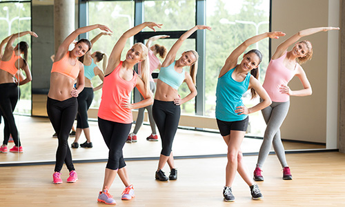
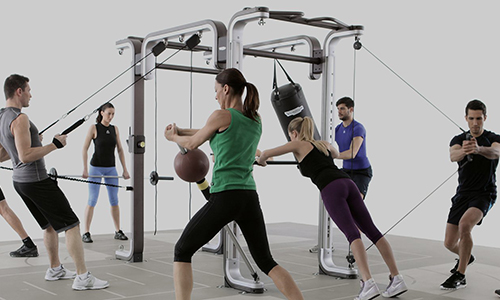
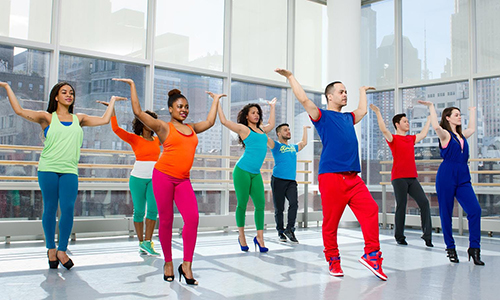
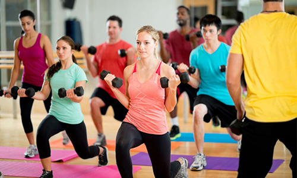
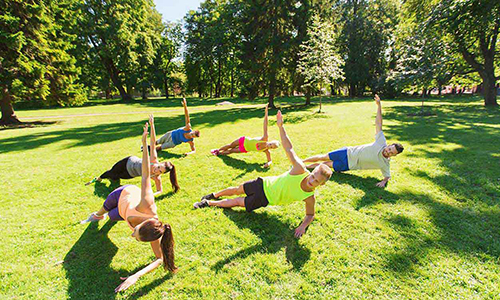
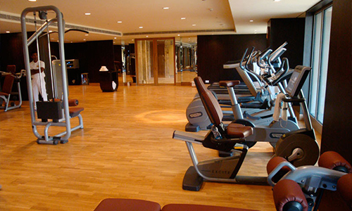
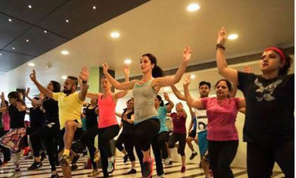

Classes of Next Level Gym
Take care of your body. It's the only place you have to live.
GYM FITNESS

Cycling is a great form of exercise as well as a practical way to get around, but it also carries the risk of significant injury, especially head injury. involves using a special stationary exercise bicycle with a weighted flywheel in a classroom setting. Indoor cycling, also known as spinning, has surged in popularity as a high-energy and effective form of cardiovascular exercise. Set within the controlled environment of a studio or home, indoor cycling offers a dynamic workout experience accessible to individuals of all fitness levels. Led by motivating instructors and accompanied by energizing music, participants pedal through a series of simulated terrains and intensities, challenging both their endurance and strength. With adjustable resistance levels and a variety of riding positions, indoor cycling sessions can be customized to suit individual goals and preferences.
INDOOR CYCLING

Exercise and rest are the cornerstones of improving your quality of life. It's not always easy but it's always worth it. When you find a fitness routine you enjoy, you'll feel better, look better and be happier in your own skin. Gym fitness is a cornerstone of modern health and wellness, offering a dynamic space for individuals to enhance their physical strength, endurance, and overall well-being. Whether pursuing weightlifting, cardio, or group classes, the gym provides a platform for diverse fitness goals. Beyond the physical benefits, the gym fosters mental resilience, discipline, and camaraderie among its members, creating a supportive community that encourages personal growth. With access to state-of-the-art equipment, knowledgeable trainers, and tailored workout plans, gym fitness empowers individuals to push their boundaries, surpass limitations, and achieve their desired level of fitness. It serves as a sanctuary where dedication meets opportunity, transforming aspirations into tangible results, one rep at a time.
POWER YOGA

one up, slim down, and find balance with this high-energy summer workout from power yoga. It brings inner peace, a spiritual boost, and an unparalleled measure of serenity.Power yoga is a general term used to describe a vigorous. Power yoga, a dynamic and vigorous form of yoga, blends traditional poses with fluid movements and breath control to create a challenging and transformative workout experience. Rooted in the ancient practice of hatha yoga, power yoga emphasizes strength, flexibility, and mindfulness, making it a popular choice for individuals seeking a holistic approach to fitness and wellness. By synchronizing breath with movement, practitioners cultivate a deep sense of focus and presence, allowing them to access their inner strength and push past physical limitations. Power yoga sequences often include a variety of poses that target different muscle groups, promoting overall body toning and increased mobility. Additionally, the dynamic nature of power yoga promotes calorie burning and cardiovascular health, making it an effective option for those looking to enhance both their physical and mental well-being. Through regular practice, individuals can harness the transformative power of yoga to build strength, find balance, and cultivate a greater sense of vitality in their lives.
CARDIO FITNESS

Cardio fitness is important to everyone. Quality cardio workouts can help everybody reach their health and fitness goals, whether those goals include new personal records for competition, lowering blood pressure, reducing cholesterol levels, managing diabetes. Cardio fitness, often referred to as cardiovascular or aerobic exercise, is a cornerstone of a well-rounded fitness regimen aimed at improving heart health, endurance, and overall well-being. Incorporating activities such as running, cycling, swimming, and dancing, cardio workouts elevate the heart rate and increase oxygen consumption, leading to a host of physiological benefits. Regular cardio exercise strengthens the heart muscle, enhances circulation, and improves lung function, reducing the risk of cardiovascular diseases like heart attacks and strokes. Moreover, cardio workouts stimulate the release of endorphins, the body's natural mood elevators, promoting feelings of well-being and reducing stress and anxiety. From high-intensity interval training (HIIT) to steady-state endurance sessions, there are countless ways to incorporate cardio fitness into one's routine, catering to individual preferences and fitness goals. Whether aiming to lose weight, boost energy levels, or enhance overall fitness, prioritizing cardio exercise plays a pivotal role in achieving optimal health and vitality.
CARDIO KICK BOXING

Kickboxing not only gives you that fab figure, but also makes you stronger. Kickboxing has been a rage with fitness enthusiasts for some time now. For many people, it is a 'cool' workout option compared to gymming, which can be monotonous. Cardio boxing is a dynamic and exhilarating fitness regimen that combines the techniques of boxing with high-intensity cardiovascular exercises. In a cardio boxing session, participants engage in a series of punching, kicking, and defensive movements, all while maintaining a rapid pace to elevate the heart rate and burn calories. This fusion of martial arts and aerobic exercise not only improves cardiovascular health but also enhances coordination, agility, and muscular endurance. With the incorporation of interval training and circuit-style workouts, cardio boxing maximizes calorie expenditure and promotes lean muscle development. Beyond its physical benefits, cardio boxing serves as a powerful outlet for stress relief and empowerment, allowing participants to channel their energy into a focused and controlled environment. Whether performed in a group class setting or through individual training sessions, cardio boxing offers a dynamic and engaging workout experience that leaves participants feeling energized, strong, and invigorated.
AEROBICS CLASSES
Aerobic exercises, which includes walking, running, and swimming, has been proven to be an effective way for burning fat and losing weight. Aerobic exercise was also a more efficient method of exercise for losing body fat. Aerobics classes provide a vibrant and energetic platform for individuals to improve their cardiovascular health, endurance, and overall fitness levels. Led by enthusiastic instructors, these classes typically feature rhythmic movements set to upbeat music, encompassing a variety of aerobic exercises such as dance routines, jumping jacks, and high-impact movements. Participants engage in continuous, moderate-to-high intensity activities that elevate the heart rate and promote calorie burning. Additionally, aerobics classes often incorporate elements of strength training, flexibility exercises, and coordination drills to offer a comprehensive full-body workout. Beyond the physical benefits, attending aerobics classes fosters a sense of community and motivation, as participants support and encourage one another to push their limits and achieve their fitness goals. With options ranging from low-impact to high-intensity sessions, aerobics classes cater to individuals of all ages, fitness levels, and abilities, making them an accessible and enjoyable way to stay active and healthy.
CIRCUIT TRAINING
Circuit training is a fast-paced class in which you do one exercise for 30 seconds to 5 minutes and then move on to another exercise. Increases your strength and aerobic fitness and burns lots of calories. It’s like a game where Everyone begins at a station. Circuit training is a versatile and efficient workout method that combines strength training and cardiovascular exercises into a single session. In a circuit training routine, participants move through a series of different exercise stations, each targeting different muscle groups or fitness components, with minimal rest in between. This continuous rotation of exercises keeps the heart rate elevated, effectively burning calories and improving cardiovascular health while simultaneously building strength and endurance. Circuit training offers a dynamic and time-efficient approach to fitness, as it can be customized to accommodate various fitness levels, goals, and equipment availability. Whether performed using bodyweight exercises, free weights, or gym machines, circuit training provides a challenging and effective full-body workout that promotes muscle development, fat loss, and overall physical fitness.
ZUMBA
Are you ready to party yourself into shape? Forget the workout, just lose yourself in the music and find yourself in shape with fitness dance at The Gym. Zumba classes feature exotic rhythms set to high-energy Latin and international beats. Zumba is a vibrant and exhilarating fitness program that blends energetic dance movements with infectious music rhythms to create a dynamic and enjoyable workout experience. Originating from Latin dance styles such as salsa, merengue, and cumbia, Zumba classes offer a fusion of dance and aerobic exercise suitable for participants of all ages and fitness levels. Led by enthusiastic instructors, Zumba sessions feature choreographed routines that combine simple dance steps with interval training techniques to elevate the heart rate and burn calories. Beyond its physical benefits, Zumba promotes mental well-being by fostering a fun and supportive atmosphere where participants can let loose, relieve stress, and boost their mood through movement and music. With its emphasis on joy, self-expression, and inclusivity, Zumba has become a global fitness phenomenon, captivating millions of enthusiasts worldwide and inspiring them to sweat, smile, and dance their way to better health and happiness.
STRENGTH CLASSES
If you are looking for an improvement in strength, aerobic and anaerobic fitness then our range of conditioning classes are what you need.Strength training is not only for building muscle mass. Strength classes provide a structured and motivating environment for individuals to improve their muscular strength, endurance, and overall fitness. Led by knowledgeable instructors, these classes typically focus on resistance training exercises using a variety of equipment such as dumbbells, barbells, resistance bands, and bodyweight exercises. Participants engage in targeted exercises that challenge specific muscle groups, aiming to increase strength, tone muscles, and improve functional movement patterns. Strength classes often incorporate progressive overload principles, varying intensity levels, and offering modifications to accommodate participants of all fitness levels and abilities. Beyond the physical benefits, attending strength classes promotes mental resilience, confidence, and empowerment as participants push their limits and achieve new milestones. Whether seeking to build lean muscle, improve athletic performance, or enhance overall health and well-being, strength classes offer a structured and effective approach to achieving fitness goals in a supportive and encouraging environment.
OUTDOOR TRAINING
Outdoor Training includes Running Club, Park Fitness. This session caters for various paces and abilities and takes you out and around our wonderful city.One of the best ways to blast fat is to train outdoors. Outdoor training offers a refreshing and invigorating alternative to traditional gym workouts, harnessing the natural environment to enhance physical fitness and overall well-being. Whether it's running through scenic trails, performing bodyweight exercises in a local park, or participating in outdoor boot camps, exercising in the open air provides numerous benefits. Outdoor training allows individuals to connect with nature, reduce stress, and boost mood levels while getting their heart pumping and muscles working. Moreover, outdoor environments offer diverse terrain and natural obstacles that can challenge balance, coordination, and proprioception, leading to a more dynamic and functional workout experience. With the freedom to explore and adapt workouts to suit individual preferences and fitness goals, outdoor training fosters a sense of adventure, creativity, and freedom that invigorates both body and mind. Whether rain or shine, outdoor training offers a breath of fresh air and a welcome escape from the confines of indoor spaces, inspiring individuals to embrace an active and adventurous lifestyle.
FREE WEIGHTS FLOOR
We have an extensive range of free weights and benches, with dumbbells, an array of plate loaded strength equipment, Olympic lifting platforms, power cages, kettlebells, and gymnastic rings. The free weights floor in a gym is a dynamic and versatile space dedicated to strength training using equipment such as dumbbells, barbells, and kettlebells. It serves as a hub for individuals looking to build muscle, increase strength, and improve overall fitness levels. With a wide range of weights available, from light to heavy, the free weights floor accommodates users of all fitness levels, from beginners to seasoned athletes. Here, individuals can perform a variety of exercises targeting different muscle groups, including squats, deadlifts, bench presses, and rows, among others. Unlike machines, free weights allow for a greater range of motion and engage stabilizing muscles, promoting functional strength and muscle balance. Additionally, the free weights floor provides a supportive environment for individuals to learn proper lifting techniques, receive guidance from trainers, and connect with like-minded fitness enthusiasts. It's a space where dedication, discipline, and determination converge, empowering individuals to sculpt their bodies and achieve their strength training goals.
Bhangra
The term Bhaá¹…gá¹›Ä refers to the traditional dance from the Indian subcontinent originating in the Majha area of the Punjab region.The dance was associated primarily with the spring harvest festival Baisakhi, and it is from one of the major products of the harvest—bhang—that bhangra drew its name. Bhangra is a lively and vibrant folk dance originating from the Punjab region of India. Rooted in the rich cultural heritage of Punjab, Bhangra is characterized by energetic movements, rhythmic footwork, and lively music beats. Traditionally performed during festivals, celebrations, and harvest seasons, Bhangra embodies the spirit of joy, unity, and community. Dancers often wear colorful traditional attire, including bright turbans, flowing robes, and embellished accessories, adding to the festive atmosphere of the performance. Accompanied by the infectious beats of the dhol, a traditional drum, Bhangra dancers showcase a series of dynamic movements, including jumps, spins, and gestures that reflect the themes of agricultural life and celebration. In recent years, Bhangra has gained popularity worldwide, transcending cultural boundaries and becoming a symbol of cultural pride, vitality, and inclusivity. Through its spirited rhythms and joyful expressions, Bhangra continues to captivate audiences and spread happiness wherever it is performed.